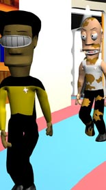
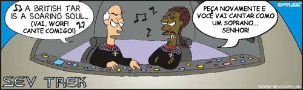

|

|
 |
Criados pelo cartunista australiano John Cook, os personagens que habitam o universo do Sev Trek so fielmente embasados nas criaes originais de Jornada nas Estrelas. Ao longo dos anos, Cook se tornou o mais famoso produtor de quadrinhos cmicos de Jornada na internet, conquistando milhares de fs. Desde 2002, o Trek Brasilis tem traduzido algumas das centenas de tirinhas produzidas por Cook, levando esse entretenimento para mais perto do pblico brasileiro. Confira a mais nova tira publicada pelo TB e logo abaixo a lista de todo o material j publicado. Para ler o material original de Cook, v ao site oficial do Sev Trek, em ingls, clicando aqui. |
A ltima do Universo Sev!
